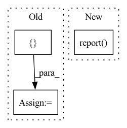

Pattern ID :1032
Before Change
train_loss = train_loop(model, opt, loss_fn, train_data_loader, device)
train_loss_list += [train_loss]
validation_loss = validation_loop(model, loss_fn, val_data_loader, device)
validation_loss_list += [ validation_lossAfter Change
with tune.checkpoint_dir(epoch) as checkpoint_dir:
path = os.path.join(checkpoint_dir, "checkpoint")
torch.save((model.state_dict(), opt.state_dict()), path)
tune.report(train_loss=train_loss, validation_loss=validation_loss)
if epoch % print_every == print_every - 1:
print("-"*25, f"Epoch {epoch + 1}","-"*25)In pattern: SUPERPATTERN
Frequency: 3
Non-data size: 3
Instances Fragment ID: 5081544
Project Name: xushenlz/parksim
Commit Name: ec66e2d8e096621262c882cb331d5b4387849163
Time: 2022-04-05
Author: lacayomatt@gmail.com
File Name: python/parksim/trajectory_predict/vanilla_transformer/train.py
M Class Name: AnonimousClass
N Class Name: AnonimousClass
M Method Name: fit(10)
N Method Name: fit(9)
M Parent Class:
N Parent Class:
M File Name: python/parksim/trajectory_predict/vanilla_transformer/train.py
N File Name: python/parksim/trajectory_predict/vanilla_transformer/train.py
M Start Line: 63
M End Line: 77
N Start Line: 69
N End Line: 91
Before Change
dataset = self.create_dataset(self.config.dataset_config)
// get metric classes
metrics = []
for metric in self.config.metrics:
metrics.append(get_class(metric))
loss = self.model.evaluate(After Change
logging.info(stringify(self.model.running_metrics.get_scores()))
// generate a report
self.model.report( dataset.labels(), id=self.id)
Fragment ID: 5081542
Project Name: biasvariancelabs/aitlas
Commit Name: 11aa324d78924c58a3dbc83ef661871e5678c98f
Time: 2021-02-01
Author: ivan.kitanovski@gmail.com
File Name: aitlas/tasks/evaluate.py
M Class Name: EvaluateTask
N Class Name: EvaluateTask
M Method Name: run(1)
N Method Name: run(1)
M Parent Class: BaseTask
N Parent Class: BaseTask
M File Name: aitlas/tasks/evaluate.py
N File Name: aitlas/tasks/evaluate.py
M Start Line: 24
M End Line: 28
N Start Line: 21
N End Line: 29
Before Change
)
// get metric classes
visualuzation_conf = {
"y_true": y_true,
"y_pred": y_pred,
"y_probs": y_probs,
"loss": loss,
"labels": dataset.labels(),
}
for vis in self.config.visualizations:
viz_cls = get_class(vis)
viz_cls(**visualuzation_conf).plot()
After Change
logging.info(stringify(calculated_metrics))
// generate a report
self.model.report( y_true, y_pred, y_prob, dataset.labels(), id=self.id)
Fragment ID: 5081539
Project Name: biasvariancelabs/aitlas
Commit Name: 70a1e688beefc18faad0ac228a121efbd75870b1
Time: 2020-10-29
Author: ivan.kitanovski@gmail.com
File Name: aitlas/tasks/evaluate.py
M Class Name: EvaluateTask
N Class Name: EvaluateTask
M Method Name: run(1)
N Method Name: run(1)
M Parent Class: BaseTask
N Parent Class: BaseTask
M File Name: aitlas/tasks/evaluate.py
N File Name: aitlas/tasks/evaluate.py
M Start Line: 33
M End Line: 44
N Start Line: 36
N End Line: 36